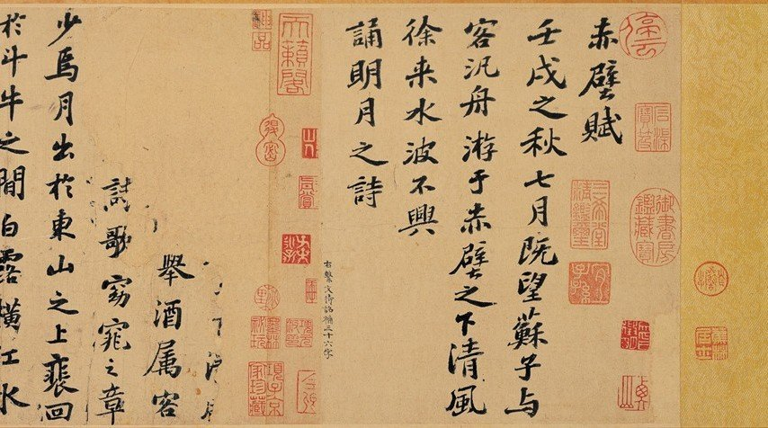
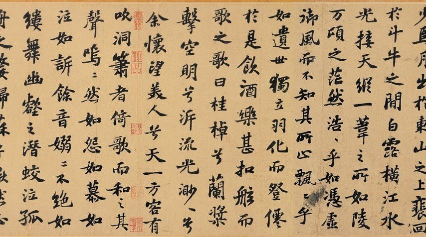
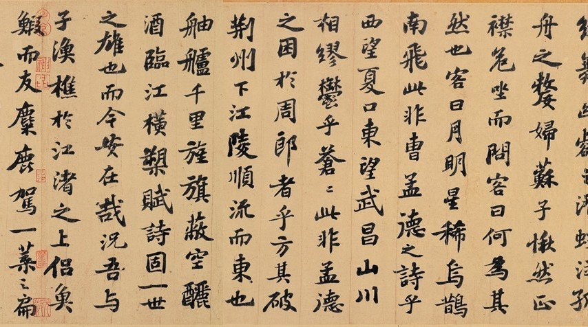
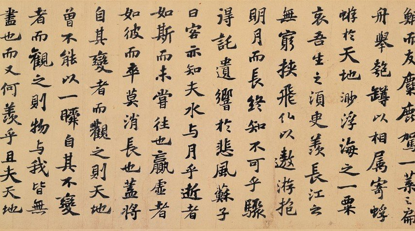
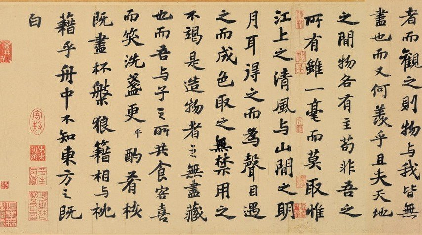
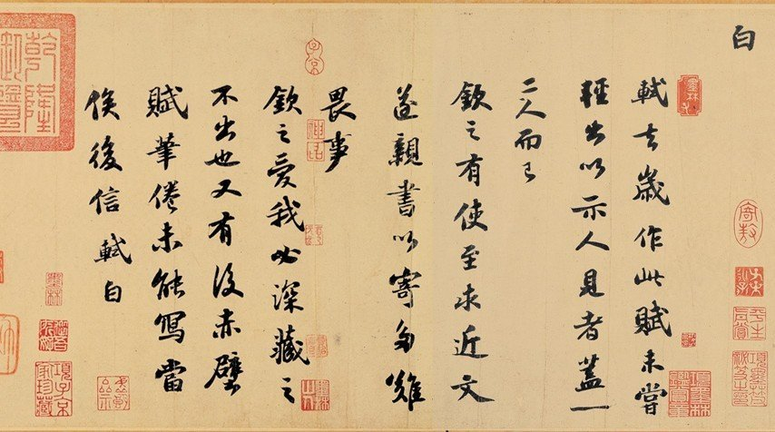

「...軾去歲作此賦，未嘗輕出以示人，見者蓋一二人而已...」
千年前的大文豪，唐宋八大家之一的蘇軾，精心揮毫寫就生平代表作之一，赤壁賦。史上有沒有其他同等級的（中小學生叫得出名字的）大文學家親筆書寫代表作留存至今？我想不出第二個例子！蘇軾也恰巧是古代大文學家中，書藝最高者。
文徵明補寫了前面幾行。書跡現存台北故宮博物院。






閑雅有解析度更好的連結，供大家看個過癮：
http://www.shianya.com/phpBB2/viewtopic.php?t=7556
要看更為精采的高解析圖檔， 請逛這個故宮網站：「大觀」北宋書畫網頁
http://tech2.npm.gov.tw/sung/
裡頭的圖片可以放大。美極。